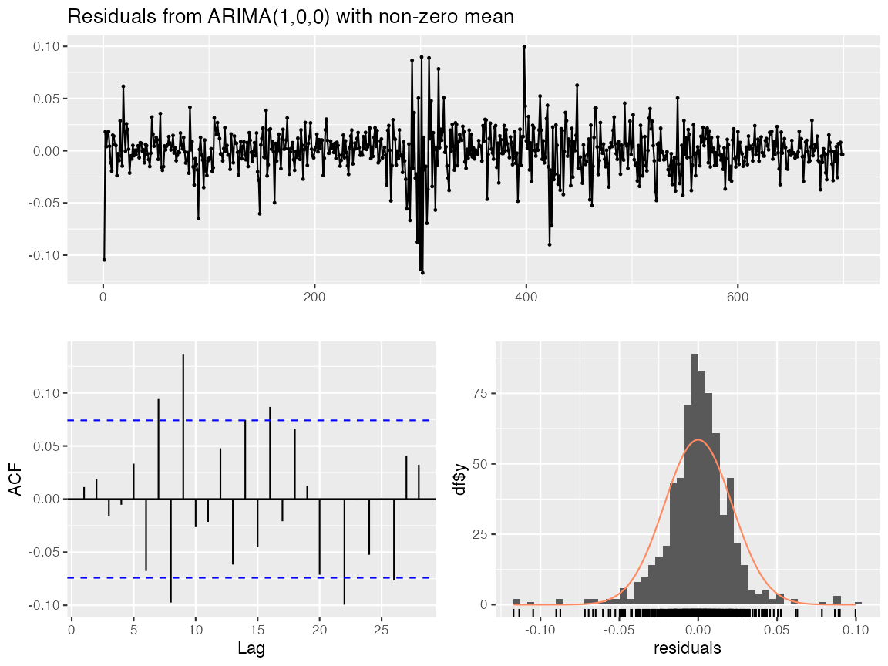
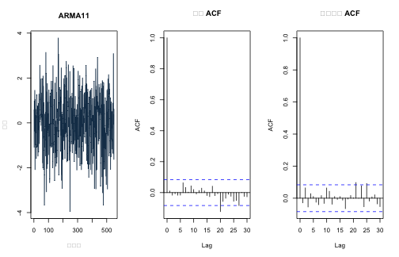
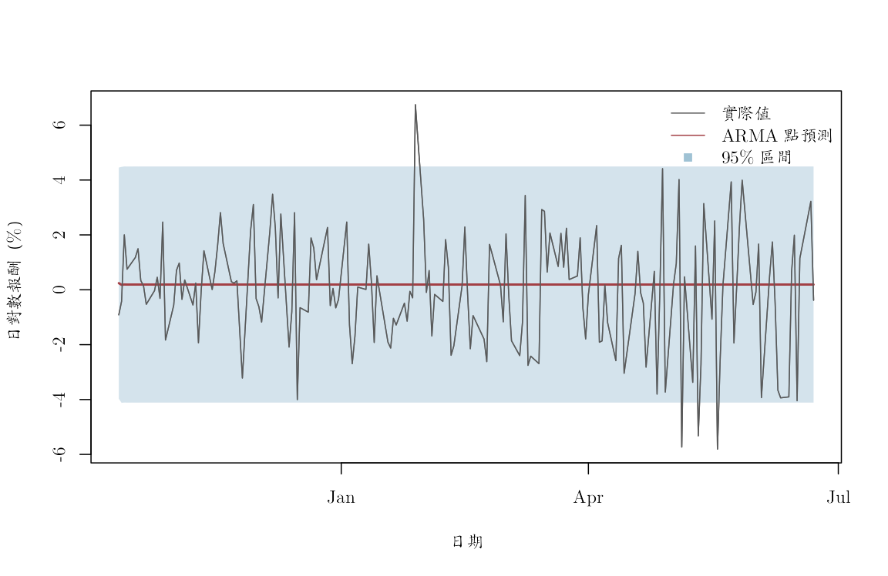

《財務時間序列分析》線上附錄
R05：ARMA 估計、診斷與多步預測
本附錄對應第 6--7 章，以真實 AAPL 日對數報酬示範 ARMA 候選模型、根、殘差診斷與一次形成的多步預測。固定資料源自原課程 S&P 500 價格檔；有效報酬樣本為 2019-01-03 至 2022-06-22，共 874 筆，單位是小數日對數報酬。資料建置方式見 data/DATA_SOURCES.md。
模型只描述 AAPL 報酬的條件平均動態。係數、診斷與預測誤差都不能解讀成市場事件對 AAPL 的因果效果，也不構成投資建議。
knitr::opts_chunk$set(
echo = TRUE, message = FALSE, warning = FALSE,
fig.width = 8, fig.height = 4.8,
dev = "ragg_png", dpi = 144,
dev.args = list(background = "white")
)
root_candidates <- c(".", "..")
is_root <- vapply(root_candidates, function(x) {
file.exists(file.path(x, "main.tex"))
}, logical(1))
stopifnot(any(is_root))
project_root <- root_candidates[which(is_root)[1]]
project_path <- function(...) file.path(project_root, ...)
stopifnot(
requireNamespace("ragg", quietly = TRUE),
requireNamespace("systemfonts", quietly = TRUE)
)
cwtex_file <- project_path("assets", "fonts", "cwTeXQKai-Medium.ttf")
stopifnot(file.exists(cwtex_file))
if (!"cwTeX Online" %in% systemfonts::registry_fonts()$family) {
systemfonts::register_font("cwTeX Online", cwtex_file)
}
plot_family <- "cwTeX Online"
固定資料與時間切分#
前 80% 報酬是訓練期，最後 20% 是一次性測試期。候選模型、BIC 與所有參數只能使用訓練期；測試期不參與規格選擇。
aapl <- read.csv(project_path(
"data", "processed", "aapl_adjusted_daily_2019_2022.csv"
))
aapl$date <- as.Date(aapl$date)
aapl <- aapl[order(aapl$date), ]
aapl <- aapl[is.finite(aapl$log_return), ]
row.names(aapl) <- NULL
stopifnot(
!anyNA(aapl$date), !anyNA(aapl$log_return),
all(diff(aapl$date) > 0)
)
y <- aapl$log_return
dates <- aapl$date
n <- length(y)
train_end <- floor(0.80 * n)
y_train <- y[seq_len(train_end)]
y_test <- y[(train_end + 1L):n]
split_table <- data.frame(
區段 = c("訓練期", "測試期"),
起日 = dates[c(1L, train_end + 1L)],
迄日 = dates[c(train_end, n)],
觀察值 = c(train_end, n - train_end),
資料來源 = "原課程 S&P 500 價格檔的 AAPL 固定版本",
單位 = "日對數報酬，小數",
check.names = FALSE
)
knitr::kable(split_table)
| 區段 | 起日 | 迄日 | 觀察值 | 資料來源 | 單位 |
|---|---|---|---|---|---|
| 訓練期 | 2019-01-03 | 2021-10-11 | 699 | 原課程 S&P 500 價格檔的 AAPL 固定版本 | 日對數報酬，小數 |
| 測試期 | 2021-10-12 | 2022-06-22 | 175 | 原課程 S&P 500 價格檔的 AAPL 固定版本 | 日對數報酬，小數 |
這裡評估的是「在訓練期末一次形成、之後不重新估計」的多步預測。逐期重估或滾動視窗的評估見 R06。
只在訓練期比較低階候選模型#
候選集合在看測試結果以前固定。stats::arima() 對定態 ARMA 所報的 intercept 是序列平均數，而不是
$Y_t=c+\phi Y_{t-1}+a_t$ 中的 $c$。
candidate_orders <- list(
ARMA00 = c(0, 0, 0),
AR10 = c(1, 0, 0),
MA01 = c(0, 0, 1),
ARMA11 = c(1, 0, 1),
AR20 = c(2, 0, 0),
MA02 = c(0, 0, 2),
ARMA21 = c(2, 0, 1),
ARMA12 = c(1, 0, 2)
)
fits <- lapply(candidate_orders, function(ord) {
arima(
y_train,
order = ord,
include.mean = TRUE,
method = "ML"
)
})
stopifnot(all(vapply(fits, function(z) z$code == 0, logical(1))))
model_table <- data.frame(
模型 = names(fits),
p = vapply(candidate_orders, function(z) z[1], numeric(1)),
q = vapply(candidate_orders, function(z) z[3], numeric(1)),
對數概似 = vapply(fits, function(z) as.numeric(logLik(z)), numeric(1)),
AIC = vapply(fits, AIC, numeric(1)),
BIC = vapply(fits, BIC, numeric(1)),
check.names = FALSE
)
model_table <- model_table[order(model_table$BIC), ]
row.names(model_table) <- NULL
knitr::kable(model_table, digits = 3)
| 模型 | p | q | 對數概似 | AIC | BIC |
|---|---|---|---|---|---|
| AR10 | 1 | 0 | 1692.238 | -3378.477 | -3364.828 |
| MA01 | 0 | 1 | 1691.150 | -3376.300 | -3362.651 |
| ARMA11 | 1 | 1 | 1692.452 | -3376.904 | -3358.705 |
| AR20 | 2 | 0 | 1692.444 | -3376.887 | -3358.689 |
| MA02 | 0 | 2 | 1692.226 | -3376.451 | -3358.253 |
| ARMA12 | 1 | 2 | 1692.452 | -3374.905 | -3352.156 |
| ARMA21 | 2 | 1 | 1692.452 | -3374.903 | -3352.155 |
| ARMA00 | 0 | 0 | 1678.042 | -3352.084 | -3342.985 |
selected_name <- model_table$模型[1]
selected_fit <- fits[[selected_name]]
selected_order <- candidate_orders[[selected_name]]
selected_name
## [1] "AR10"
BIC 是訓練期內的相對比較，不是測試期成績，也不保證候選集合包含正確模型。
原課程套件捷徑：auto.arima()#
原課程的
slides/L04_ARMA/W1L4_R_template_for_estimating_ARMA.R
以 forecast::auto.arima() 選階、checkresiduals() 診斷，再以
forecast() 形成預測。
slides/L05_Forecasting_and_CV/W1L5_R_prediction_cv.R
另示範了不使用逐步搜尋的 AIC 選階。下列兩個套件版本都只讀訓練期：第一個把階數範圍與資訊準則限制成上一節的手動候選集合，方便核對；第二個保留原課程的較自動 AIC 搜尋。
stopifnot(requireNamespace("forecast", quietly = TRUE))
# p <= 2、q <= 2 且 p + q <= 3，正好對應上文八個候選模型。
fit_auto_matched <- forecast::auto.arima(
y_train,
d = 0,
stationary = TRUE,
seasonal = FALSE,
max.p = 2,
max.q = 2,
max.order = 3,
ic = "bic",
stepwise = FALSE,
approximation = FALSE,
allowmean = TRUE
)
# 原課程 AIC 工作流；不用測試期決定階數。
fit_auto_course <- forecast::auto.arima(
y_train,
seasonal = FALSE,
ic = "aic",
stepwise = FALSE,
approximation = FALSE
)
order_text <- function(fit) {
order <- forecast::arimaorder(fit)[c("p", "d", "q")]
sprintf("ARIMA(%d,%d,%d)", order["p"], order["d"], order["q"])
}
selection_comparison <- data.frame(
方法 = c(
"手動候選集／BIC",
"forecast 受限搜尋／BIC",
"forecast 原課程搜尋／AIC"
),
選定模型 = c(
sprintf(
"ARIMA(%d,%d,%d)",
selected_order[1], selected_order[2], selected_order[3]
),
order_text(fit_auto_matched),
order_text(fit_auto_course)
),
對數概似 = c(
as.numeric(logLik(selected_fit)),
as.numeric(logLik(fit_auto_matched)),
as.numeric(logLik(fit_auto_course))
),
AIC = c(
AIC(selected_fit), AIC(fit_auto_matched), AIC(fit_auto_course)
),
BIC = c(
BIC(selected_fit), BIC(fit_auto_matched), BIC(fit_auto_course)
),
check.names = FALSE
)
knitr::kable(selection_comparison, digits = 3)
| 方法 | 選定模型 | 對數概似 | AIC | BIC |
|---|---|---|---|---|
| 手動候選集／BIC | ARIMA(1,0,0) | 1692.238 | -3378.477 | -3364.828 |
| forecast 受限搜尋／BIC | ARIMA(1,0,0) | 1692.238 | -3378.477 | -3364.828 |
| forecast 原課程搜尋／AIC | ARIMA(2,0,3) | 1708.172 | -3402.344 | -3370.497 |
受限套件搜尋是對手動表的程式核對；若估計方法與參數化相同，應選到相同的相對勝者。AIC 版本的候選範圍與懲罰不同，即使選到不同階數也不是程式錯誤。這個對照也說明「自動選階」仍需把資訊準則、搜尋範圍與訓練期寫清楚。
係數、定態根與可逆根#
coefficient_table <- data.frame(
參數 = names(coef(selected_fit)),
估計值 = as.numeric(coef(selected_fit)),
標準誤 = sqrt(diag(selected_fit$var.coef)),
check.names = FALSE
)
knitr::kable(coefficient_table, digits = 6)
| 參數 | 估計值 | 標準誤 | |
|---|---|---|---|
| ar1 | ar1 | -0.202870 | 0.037686 |
| intercept | intercept | 0.001906 | 0.000677 |
extract_roots <- function(fit) {
b <- coef(fit)
ar_coef <- b[grep("^ar[0-9]+$", names(b))]
ma_coef <- b[grep("^ma[0-9]+$", names(b))]
ar_roots <- if (length(ar_coef)) {
polyroot(c(1, -ar_coef))
} else {
complex()
}
ma_roots <- if (length(ma_coef)) {
polyroot(c(1, ma_coef))
} else {
complex()
}
rbind(
if (length(ar_roots)) data.frame(
部分 = "AR", 實部 = Re(ar_roots), 虛部 = Im(ar_roots), 模 = Mod(ar_roots)
),
if (length(ma_roots)) data.frame(
部分 = "MA", 實部 = Re(ma_roots), 虛部 = Im(ma_roots), 模 = Mod(ma_roots)
)
)
}
root_table <- extract_roots(selected_fit)
if (nrow(root_table)) {
knitr::kable(root_table, digits = 5)
stopifnot(all(root_table$模 > 1))
} else {
cat("所選模型沒有 AR 或 MA 根需要檢查。\n")
}
AR 根在單位圓外表示估計模型具有因果定態表示；MA 根在單位圓外表示可逆。根接近 1 時，有限樣本推論與遠期預測仍可能不穩定。
訓練期殘差診斷#
selected_residual <- as.numeric(residuals(selected_fit))
selected_residual <- selected_residual[is.finite(selected_residual)]
p_plus_q <- selected_order[1] + selected_order[3]
q_mean <- Box.test(
selected_residual, lag = 20, type = "Ljung-Box",
fitdf = p_plus_q
)
q_square <- Box.test(
selected_residual^2, lag = 20, type = "Ljung-Box"
)
diagnostic_table <- data.frame(
檢查對象 = c("殘差", "平方殘差"),
Q20 = c(unname(q_mean$statistic), unname(q_square$statistic)),
自由度 = c(unname(q_mean$parameter), unname(q_square$parameter)),
p值 = c(q_mean$p.value, q_square$p.value),
check.names = FALSE
)
knitr::kable(diagnostic_table, digits = 6)
| 檢查對象 | Q20 | 自由度 | p值 |
|---|---|---|---|
| 殘差 | 54.18846 | 19 | 3.1e-05 |
| 平方殘差 | 355.02037 | 20 | 0.0e+00 |
本次 AR(1) 殘差的 Ljung--Box $p$ 值約為 $3.1\times10^{-5}$，平方殘差的數值更接近零。也就是說，BIC 所選模型只是候選集合內的相對勝者，並未清除全部平均與波動相依。
matched_order <- forecast::arimaorder(fit_auto_matched)[c("p", "d", "q")]
matched_residual <- as.numeric(residuals(fit_auto_matched))
matched_residual <- matched_residual[is.finite(matched_residual)]
matched_df <- matched_order["p"] + matched_order["q"]
matched_q_mean <- Box.test(
matched_residual,
lag = 20,
type = "Ljung-Box",
fitdf = matched_df
)
matched_q_square <- Box.test(
matched_residual^2,
lag = 20,
type = "Ljung-Box"
)
diagnostic_comparison <- data.frame(
方法 = rep(c("手動候選集", "forecast 受限搜尋"), each = 2),
檢查對象 = rep(c("殘差", "平方殘差"), 2),
Q20 = c(
unname(q_mean$statistic), unname(q_square$statistic),
unname(matched_q_mean$statistic),
unname(matched_q_square$statistic)
),
p值 = c(
q_mean$p.value, q_square$p.value,
matched_q_mean$p.value, matched_q_square$p.value
),
check.names = FALSE
)
knitr::kable(diagnostic_comparison, digits = 7)
| 方法 | 檢查對象 | Q20 | p值 |
|---|---|---|---|
| 手動候選集 | 殘差 | 54.18846 | 3.09e-05 |
| 手動候選集 | 平方殘差 | 355.02037 | 0.00e+00 |
| forecast 受限搜尋 | 殘差 | 54.19123 | 3.09e-05 |
| forecast 受限搜尋 | 平方殘差 | 355.02619 | 0.00e+00 |
# 原課程使用的一行診斷：同時列出殘差圖、ACF 與 Ljung--Box 檢定。
forecast::checkresiduals(fit_auto_matched, lag = 20)

##
## Ljung-Box test
##
## data: Residuals from ARIMA(1,0,0) with non-zero mean
## Q* = 54.191, df = 19, p-value = 3.089e-05
##
## Model df: 1. Total lags used: 20
若受限搜尋與手動程式選到相同模型，上表應幾乎重合。小數點差異可來自套件的初始化與數值容差；若模型或自由度不同，則必須先統一階數、估計法與 fitdf，才能比較 Ljung--Box 數值。
old_par <- par(
mfrow = c(1, 3), mar = c(4.5, 3.5, 4, 1),
family = plot_family, cex.main = 0.88
)
plot(
dates[seq_along(selected_residual)], 100 * selected_residual,
type = "l", col = "#173B57",
xlab = "日期", ylab = "殘差（%）", main = selected_name
)
acf(selected_residual, lag.max = 30, main = "殘差 ACF")
acf(selected_residual^2, lag.max = 30, main = "平方殘差 ACF")

par(old_par)
若殘差仍有線性相依，所選低階平均數模型只是候選集合中的相對勝者，不是充分模型。平方殘差的相依則是第 11--12 章 ARCH/GARCH 模型的動機。
鎖定模型的一次多步預測#
h <- length(y_test)
forecast_object <- predict(selected_fit, n.ahead = h)
forecast_table <- data.frame(
日期 = dates[(train_end + 1L):n],
實際值 = y_test,
ARMA預測 = as.numeric(forecast_object$pred),
預測標準誤 = as.numeric(forecast_object$se),
check.names = FALSE
)
forecast_table$下界95 <- forecast_table$ARMA預測 -
1.96 * forecast_table$預測標準誤
forecast_table$上界95 <- forecast_table$ARMA預測 +
1.96 * forecast_table$預測標準誤
forecast_table$ARMA誤差 <- forecast_table$實際值 -
forecast_table$ARMA預測
knitr::kable(head(forecast_table, 8), digits = 6)
| 日期 | 實際值 | ARMA預測 | 預測標準誤 | 下界95 | 上界95 | ARMA誤差 |
|---|---|---|---|---|---|---|
| 2021-10-12 | -0.009145 | 0.002420 | 0.021496 | -0.039711 | 0.044552 | -0.011565 |
| 2021-10-13 | -0.004249 | 0.001802 | 0.021933 | -0.041188 | 0.044791 | -0.006051 |
| 2021-10-14 | 0.020024 | 0.001927 | 0.021951 | -0.041097 | 0.044952 | 0.018097 |
| 2021-10-15 | 0.007485 | 0.001902 | 0.021952 | -0.041124 | 0.044928 | 0.005583 |
| 2021-10-18 | 0.011737 | 0.001907 | 0.021952 | -0.041119 | 0.044933 | 0.009830 |
| 2021-10-19 | 0.014968 | 0.001906 | 0.021952 | -0.041120 | 0.044932 | 0.013062 |
| 2021-10-20 | 0.003356 | 0.001906 | 0.021952 | -0.041120 | 0.044932 | 0.001450 |
| 2021-10-21 | 0.001473 | 0.001906 | 0.021952 | -0.041120 | 0.044932 | -0.000433 |
score_row <- function(actual, forecast, label) {
error <- actual - forecast
data.frame(
模型 = label,
RMSE = sqrt(mean(error^2)),
MAE = mean(abs(error)),
平均誤差 = mean(error),
check.names = FALSE
)
}
score_table <- rbind(
score_row(y_test, forecast_table$ARMA預測, selected_name),
score_row(y_test, rep(0, h), "零報酬"),
score_row(y_test, rep(mean(y_train), h), "訓練期平均數")
)
score_table$常態區間涵蓋率 <- c(
mean(
y_test >= forecast_table$下界95 &
y_test <= forecast_table$上界95
),
NA_real_, NA_real_
)
knitr::kable(score_table, digits = 6)
| 模型 | RMSE | MAE | 平均誤差 | 常態區間涵蓋率 |
|---|---|---|---|---|
| AR10 | 0.020809 | 0.016036 | -0.002191 | 0.977143 |
| 零報酬 | 0.020694 | 0.015951 | -0.000283 | NA |
| 訓練期平均數 | 0.020805 | 0.016031 | -0.002162 | NA |
在這 175 筆固定測試資料中，零報酬基準的 RMSE 與 MAE 都略低於訓練期 BIC 所選的 AR(1)。這個負結果很重要：樣本內模型選擇準則較佳，不保證樣本外預測勝過簡單基準。
原課程套件捷徑：forecast() 與 accuracy()#
下列程式對前面兩個 auto.arima() 模型執行原課程的
forecast() 與 accuracy() 工作流。兩個階數都在訓練期鎖定；測試期只用來計分。
course_forecast_matched <- forecast::forecast(
fit_auto_matched,
h = h,
level = 95
)
course_forecast_aic <- forecast::forecast(
fit_auto_course,
h = h,
level = 95
)
accuracy_row <- function(object, actual, label) {
package_accuracy <- forecast::accuracy(object, actual)
test_accuracy <- package_accuracy[nrow(package_accuracy), , drop = FALSE]
data.frame(
模型 = label,
RMSE = unname(test_accuracy[1, "RMSE"]),
MAE = unname(test_accuracy[1, "MAE"]),
平均誤差 = unname(test_accuracy[1, "ME"]),
常態區間涵蓋率 = mean(
actual >= as.numeric(object$lower[, 1]) &
actual <= as.numeric(object$upper[, 1])
),
check.names = FALSE
)
}
manual_accuracy <- score_row(
y_test,
forecast_table$ARMA預測,
paste0("手動候選：", selected_name)
)
manual_accuracy$常態區間涵蓋率 <- mean(
y_test >= forecast_table$下界95 &
y_test <= forecast_table$上界95
)
zero_accuracy <- score_row(y_test, rep(0, h), "零報酬")
zero_accuracy$常態區間涵蓋率 <- NA_real_
package_forecast_comparison <- rbind(
manual_accuracy,
accuracy_row(
course_forecast_matched,
y_test,
paste0("forecast 受限BIC：", order_text(fit_auto_matched))
),
accuracy_row(
course_forecast_aic,
y_test,
paste0("forecast 原課程AIC：", order_text(fit_auto_course))
),
zero_accuracy
)
row.names(package_forecast_comparison) <- NULL
knitr::kable(package_forecast_comparison, digits = 7)
| 模型 | RMSE | MAE | 平均誤差 | 常態區間涵蓋率 |
|---|---|---|---|---|
| 手動候選：AR10 | 0.0208091 | 0.0160361 | -0.0021910 | 0.9771429 |
| forecast 受限BIC：ARIMA(1,0,0) | 0.0208091 | 0.0160361 | -0.0021907 | 0.9771429 |
| forecast 原課程AIC：ARIMA(2,0,3) | 0.0208093 | 0.0160548 | -0.0022301 | 0.9771429 |
| 零報酬 | 0.0206943 | 0.0159514 | -0.0002826 | NA |
若手動 BIC 與受限 auto.arima() 選到同一階數，兩者點預測與評分應幾乎相同；這是程式實作的交叉核對。原課程 AIC 版本可能選到不同階數，因而產生不同預測。accuracy() 讓計分更簡短，卻不會改變樣本外紀律：模型、資訊準則與預測起點仍必須在讀取測試答案以前固定。
old_par <- par(family = plot_family)
plot(
forecast_table$日期, 100 * forecast_table$實際值,
type = "l", col = "gray35",
xlab = "日期", ylab = "日對數報酬（%）"
)
polygon(
c(forecast_table$日期, rev(forecast_table$日期)),
100 * c(forecast_table$下界95, rev(forecast_table$上界95)),
border = NA, col = adjustcolor("#9FC2D4", alpha.f = 0.45)
)
lines(
forecast_table$日期, 100 * forecast_table$ARMA預測,
col = "#A34045", lwd = 2
)
lines(
forecast_table$日期, 100 * forecast_table$實際值,
col = "gray35"
)
legend(
"topright", c("實際值", "ARMA 點預測", "95% 區間"),
col = c("gray35", "#A34045", "#9FC2D4"),
lty = c(1, 1, NA), pch = c(NA, NA, 15), bty = "n"
)

par(old_par)
常態區間主要反映未來創新，沒有完整納入參數、階數選擇、厚尾與條件異質變異的不確定性。固定測試期涵蓋率也不是母體涵蓋率的證明。
小型模擬只作單元檢查#
最後用已知 ARMA(1,1) 真值檢查 arima() 的符號慣例與估計流程。它不參與 AAPL 的模型選擇或實證結論。
set.seed(20260721)
truth <- c(ar1 = 0.55, ma1 = -0.35)
simulated_check <- as.numeric(arima.sim(
model = list(ar = truth["ar1"], ma = truth["ma1"]),
n = 5000, sd = 0.01
))
fit_check <- arima(
simulated_check, order = c(1, 0, 1),
include.mean = TRUE, method = "ML"
)
check_table <- data.frame(
參數 = names(truth),
真值 = truth,
估計值 = coef(fit_check)[names(truth)],
check.names = FALSE
)
knitr::kable(check_table, digits = 4)
| 參數 | 真值 | 估計值 | |
|---|---|---|---|
| ar1 | ar1 | 0.55 | 0.5673 |
| ma1 | ma1 | -0.35 | -0.3769 |
stopifnot(max(abs(check_table$估計值 - check_table$真值)) < 0.10)
建模紀錄#
可重現報告至少保留固定資料版本、訓練截止日、候選集合、估計方法、截距參數化、BIC、根、殘差診斷、預測期距與區間假設。若看過測試結果後再換模型，該期間就必須重新歸類為驗證期。